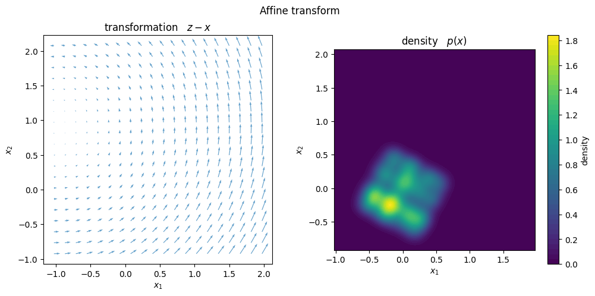
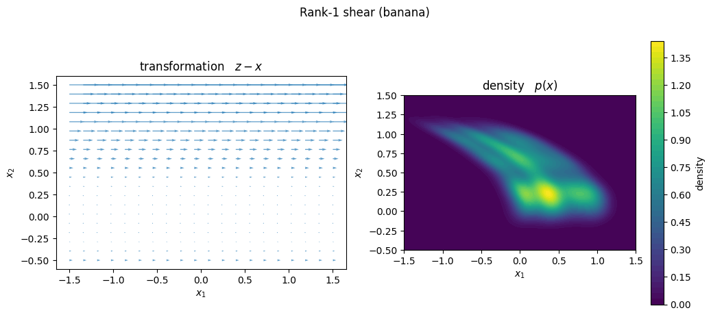
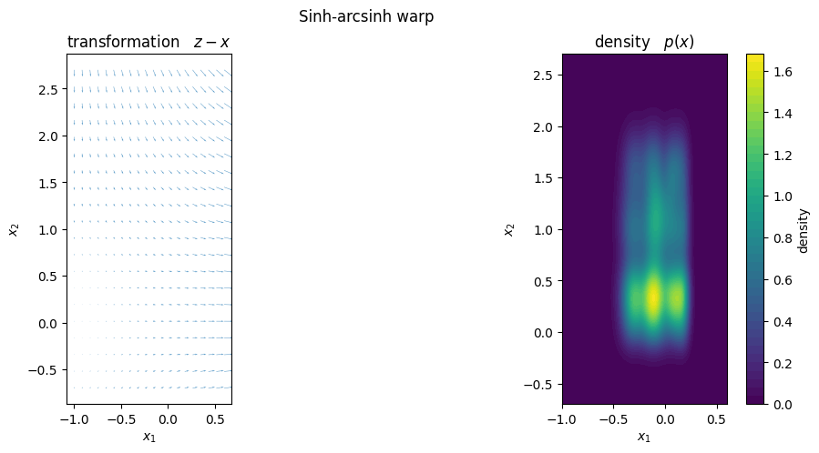
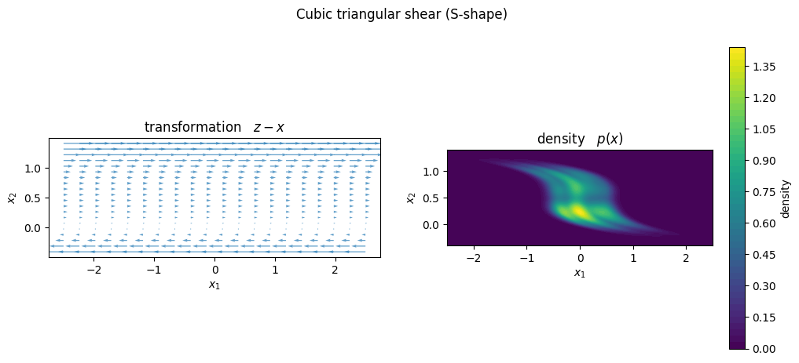
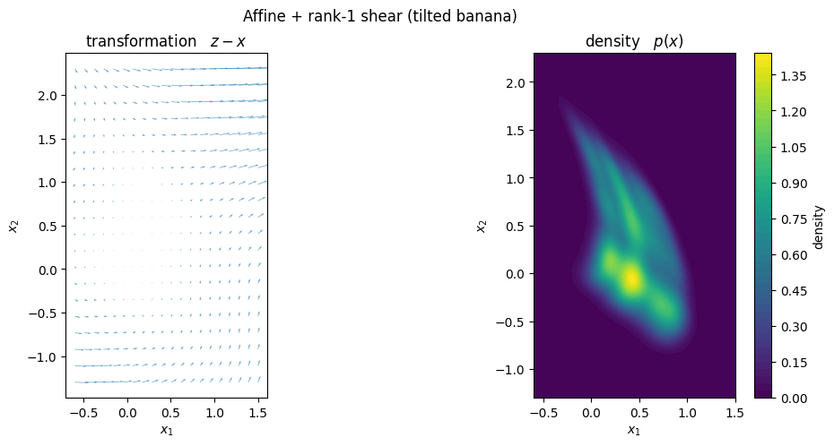

Deep TT Density demo
The torchtt.nn.TTDensityLayer represents a probability density as a normalized squared functional Tensor Train — a “Born-machine” density.
Given univariate basis functions \(\{\phi^{(k)}_i\}_{i=1}^{N_k}\) for every dimension \(k = 1, \dots, d\) (here Gaussians), we build a scalar model function
whose coefficient tensor \(G\) is stored in the Tensor-Train format with cores \(G^{(k)} \in \mathbb{R}^{R_k \times N_k \times R_{k+1}}\) and \(R_1 = R_{d+1} = 1\). The density is the normalized square
Squaring guarantees non-negativity, and the normalizer \(Z = \int f^2\) is available in closed form from the cores and the basis integration weights \(w^{(k)}_i = \int \phi^{(k)}_i\), so \(p_\text{ref}\) integrates to \(1\) by construction.
Optionally a diffeomorphism \(T\) (a smooth, invertible change of variables) is applied, yielding the push-forward density through the change-of-variables formula
The transform lets a low-rank reference density represent correlated or curved distributions. Because the cores are meant to be produced by an upstream neural network (hence deep TT), the layer is an ordinary torch.nn.Module: it takes a flat parameter vector — the flattened TT cores followed by the transform parameters — together with the evaluation points \(x\), and returns \(p(x)\). A network can thus emit a different density for every element of a batch.
[1]:
%matplotlib inline
import torch
import matplotlib.pyplot as plt
import torchtt
import torchtt.functional
from torchtt.nn import (
TTDensityLayer,
AffineTransform,
Rank1Shear,
SinhArcsinhWarp,
TriangularPolyShear,
ComposedTransform,
)
The reference density: basis and layer
We work in \(d = 2\). Each dimension is given a Gaussian basis centred on a uniform grid of \(N_k\) points on \([0, 1]\); delta_overlap=1 sets every Gaussian’s width to the spacing of its immediate neighbour, so adjacent bumps overlap smoothly. The TT ranks R = [1, 5, 1] allow a bond rank of \(5\) between the two modes, which controls how much correlation between \(x_1\) and \(x_2\) the density can capture.
The flattened TT cores contain \(\sum_k R_k N_k R_{k+1}\) numbers; we draw them once as theta_core and reuse this single reference density throughout, appending a different transform’s parameters after it in each section below.
[2]:
torch.manual_seed(0)
dim = 2
N = [10, 11] # number of basis functions per dimension
R = [1, 5, 1] # TT ranks (bond rank 5 between the two modes)
basis = [
torchtt.functional.GaussianBasis(torch.linspace(0, 1, N[0]), delta_overlap=1),
torchtt.functional.GaussianBasis(torch.linspace(0, 1, N[1]), delta_overlap=1),
]
# The flattened TT cores have this many entries; every layer below appends its
# own transform parameters after them.
n_core = sum(n * r0 * r1 for n, r0, r1 in zip(N, R, R[1:]))
theta_core = torch.rand(n_core) # one shared reference density, reused everywhere
print(f"TT-core parameters: {n_core}")
TT-core parameters: 105
Checking the normalization
The flat input vector is laid out as \([\,\text{TT cores}\ |\ \text{transform params}\,]\). We are not training here, so we simply draw one random parameter vector (the shared cores plus a random affine transform \(z = R(\theta)\,\mathrm{diag}(e^{a})\,x + b\)), broadcast it across a batch of \(M = 2^{18}\) points, and confirm the density is normalized with a Monte-Carlo estimate
on a square \(\Omega\) of area \(|\Omega| = 3^2\) centred on the affine offset \(b\) so it sits over the density’s mass. The estimate should come out close to \(1\).
[3]:
transform = AffineTransform(dim)
layer = TTDensityLayer(N, R, basis, transform=transform)
n_samples = 2**18
theta_affine = torch.rand(transform.input_requirement())
params = torch.cat([theta_core, theta_affine])
offset = theta_affine[-dim:] # the affine translation b
tts = params.unsqueeze(0).expand(n_samples, -1)
box = 3.0
xs = torch.rand(n_samples, dim) * box - box / 2 + offset # box centred on the mass
pdf_val = layer(tts, xs)
integral = pdf_val.sum() / n_samples * box**dim
print("pdf batch shape:", tuple(pdf_val.shape))
print(f"Monte-Carlo integral (expected ~1): {integral:.4f}")
pdf batch shape: (262144,)
Monte-Carlo integral (expected ~1): 1.0053
Transformation and density
From here on we tour the diffeomorphisms available in torchtt.nn. Each one plugs into a TTDensityLayer the same way, so we keep the same reference cores theta_core and only change the transform tail.
For every transform we draw two panels over a common window: on the left the displacement field \(z - x = T(x) - x\) (how the map moves points), and on the right the resulting density \(p(x) = p_\text{ref}(T(x))\,|\det J_T(x)|\). We start with the affine map used above.
[4]:
# Reuse the affine transform, layer and parameters from the check above.
print(f"TT-core parameters: {n_core}")
print(f"transform parameters: {transform.input_requirement()}")
x0, x1 = offset[0].item() - 1.5, offset[0].item() + 1.5
y0, y1 = offset[1].item() - 1.5, offset[1].item() + 1.5
# left panel: the transformation's displacement field z - x (20 x 20 grid)
qx, qy = torch.linspace(x0, x1, 20), torch.linspace(y0, y1, 20)
Xq, Yq = torch.meshgrid(qx, qy, indexing="ij")
grid_q = torch.stack((Xq.flatten(), Yq.flatten()), dim=1)
z, _ = transform(grid_q, theta_affine.expand(grid_q.shape[0], -1))
U = (z[:, 0] - grid_q[:, 0]).reshape(20, 20)
V = (z[:, 1] - grid_q[:, 1]).reshape(20, 20)
# right panel: the density p(x) (200 x 200 grid)
gx, gy = torch.linspace(x0, x1, 200), torch.linspace(y0, y1, 200)
Xg, Yg = torch.meshgrid(gx, gy, indexing="ij")
grid_g = torch.stack((Xg.flatten(), Yg.flatten()), dim=1)
full_params = torch.cat([theta_core, theta_affine])
with torch.no_grad():
pdf = layer(full_params.unsqueeze(0).expand(grid_g.shape[0], -1), grid_g).reshape(200, 200)
fig, (ax_t, ax_p) = plt.subplots(1, 2, figsize=(12, 5))
ax_t.quiver(Xq.numpy(), Yq.numpy(), U.numpy(), V.numpy(), color="tab:blue", alpha=0.7)
ax_t.set_title("transformation $z - x$")
cf = ax_p.contourf(Xg.numpy(), Yg.numpy(), pdf.numpy(), levels=50)
fig.colorbar(cf, ax=ax_p, label="density")
ax_p.set_title("density $p(x)$")
for ax in (ax_t, ax_p):
ax.set_xlabel("$x_1$")
ax.set_ylabel("$x_2$")
ax.set_aspect("equal")
fig.suptitle("Affine transform")
plt.show()
TT-core parameters: 105
transform parameters: 5

Rank-1 shear
At low rank the reference density is restricted to fairly generic shapes (roughly a rotated, scaled blob). A nonlinear diffeomorphism can bend it into curved distributions such as the classic “banana”.
Rank1Shear is a volume-preserving rank-1 shear
where \(u\) is internally projected orthogonally to \(v\) so that \(v^\top u = 0\) and hence \(\det J = 1\). With \(u = [1, 0]\), \(v = [0, 1]\), \(c = 0\) and \(g(t) = t^2\) it becomes \((x_1, x_2) \mapsto (x_1 + x_2^2,\ x_2)\) — a parabolic shear along the first axis, with parameter vector \([u_x, u_y, v_x, v_y, c, \alpha_1, \alpha_2]\).
[5]:
shear = Rank1Shear(dim, degree=2)
layer_shear = TTDensityLayer(N, R, basis, transform=shear)
# [u_x, u_y, v_x, v_y, c, alpha_1, alpha_2]: u=[1,0], v=[0,1], g(t)=t**2
shear_params = torch.tensor([1.0, 0.0, 0.0, 1.0, 0.0, 0.0, 1.0])
print(f"TT-core parameters: {n_core}")
print(f"transform parameters: {shear.input_requirement()}")
x0, x1, y0, y1 = -1.5, 1.5, -0.5, 1.5
# left panel: the transformation's displacement field z - x (20 x 20 grid)
qx, qy = torch.linspace(x0, x1, 20), torch.linspace(y0, y1, 20)
Xq, Yq = torch.meshgrid(qx, qy, indexing="ij")
grid_q = torch.stack((Xq.flatten(), Yq.flatten()), dim=1)
z, _ = shear(grid_q, shear_params.expand(grid_q.shape[0], -1))
U = (z[:, 0] - grid_q[:, 0]).reshape(20, 20)
V = (z[:, 1] - grid_q[:, 1]).reshape(20, 20)
# right panel: the density p(x) (200 x 200 grid)
gx, gy = torch.linspace(x0, x1, 200), torch.linspace(y0, y1, 200)
Xg, Yg = torch.meshgrid(gx, gy, indexing="ij")
grid_g = torch.stack((Xg.flatten(), Yg.flatten()), dim=1)
full_params = torch.cat([theta_core, shear_params])
with torch.no_grad():
pdf = layer_shear(full_params.unsqueeze(0).expand(grid_g.shape[0], -1), grid_g).reshape(200, 200)
fig, (ax_t, ax_p) = plt.subplots(1, 2, figsize=(12, 5))
ax_t.quiver(Xq.numpy(), Yq.numpy(), U.numpy(), V.numpy(), color="tab:blue", alpha=0.7)
ax_t.set_title("transformation $z - x$")
cf = ax_p.contourf(Xg.numpy(), Yg.numpy(), pdf.numpy(), levels=50)
fig.colorbar(cf, ax=ax_p, label="density")
ax_p.set_title("density $p(x)$")
for ax in (ax_t, ax_p):
ax.set_xlabel("$x_1$")
ax.set_ylabel("$x_2$")
ax.set_aspect("equal")
fig.suptitle("Rank-1 shear (banana)")
plt.show()
TT-core parameters: 105
transform parameters: 7

Sinh-arcsinh warp
SinhArcsinhWarp acts on each coordinate independently,
with per-axis parameters \([s_1, s_2, b_1, b_2]\). The offset \(b_i\) controls the skewness and the log-scale \(s_i\) the tail weight along axis \(i\). Unlike the shears it has a non-trivial Jacobian, \(\det J = \prod_i e^{s_i}\cosh(\cdot)/\sqrt{1 + x_i^2}\).
[6]:
warp = SinhArcsinhWarp(dim)
layer_warp = TTDensityLayer(N, R, basis, transform=warp)
# [s_1, s_2, b_1, b_2]: per-axis log-scale (tails) and offset (skew)
warp_params = torch.tensor([0.5, -0.4, 0.6, 0.0])
print(f"TT-core parameters: {n_core}")
print(f"transform parameters: {warp.input_requirement()}")
x0, x1, y0, y1 = -1.0, 0.6, -0.7, 2.7
# left panel: the transformation's displacement field z - x (20 x 20 grid)
qx, qy = torch.linspace(x0, x1, 20), torch.linspace(y0, y1, 20)
Xq, Yq = torch.meshgrid(qx, qy, indexing="ij")
grid_q = torch.stack((Xq.flatten(), Yq.flatten()), dim=1)
z, _ = warp(grid_q, warp_params.expand(grid_q.shape[0], -1))
U = (z[:, 0] - grid_q[:, 0]).reshape(20, 20)
V = (z[:, 1] - grid_q[:, 1]).reshape(20, 20)
# right panel: the density p(x) (200 x 200 grid)
gx, gy = torch.linspace(x0, x1, 200), torch.linspace(y0, y1, 200)
Xg, Yg = torch.meshgrid(gx, gy, indexing="ij")
grid_g = torch.stack((Xg.flatten(), Yg.flatten()), dim=1)
full_params = torch.cat([theta_core, warp_params])
with torch.no_grad():
pdf = layer_warp(full_params.unsqueeze(0).expand(grid_g.shape[0], -1), grid_g).reshape(200, 200)
fig, (ax_t, ax_p) = plt.subplots(1, 2, figsize=(12, 5))
ax_t.quiver(Xq.numpy(), Yq.numpy(), U.numpy(), V.numpy(), color="tab:blue", alpha=0.7)
ax_t.set_title("transformation $z - x$")
cf = ax_p.contourf(Xg.numpy(), Yg.numpy(), pdf.numpy(), levels=50)
fig.colorbar(cf, ax=ax_p, label="density")
ax_p.set_title("density $p(x)$")
for ax in (ax_t, ax_p):
ax.set_xlabel("$x_1$")
ax.set_ylabel("$x_2$")
ax.set_aspect("equal")
fig.suptitle("Sinh-arcsinh warp")
plt.show()
TT-core parameters: 105
transform parameters: 4

Triangular polynomial shear
TriangularPolyShear is a Knothe-Rosenblatt map: each coordinate is shifted by a polynomial of the later coordinates,
which is triangular and hence volume-preserving (\(\det J = 1\)). In 2-D a single polynomial \(q(x_2)\) shifts \(x_1\); where the banana used \(q(t) = t^2\), a cubic \(q\) can bend the density into an S-shape.
[7]:
poly_shear = TriangularPolyShear(dim, degree=3)
layer_poly = TTDensityLayer(N, R, basis, transform=poly_shear)
# [beta_1, beta_2, beta_3]: q(t) = beta_1 t + beta_2 t**2 + beta_3 t**3
poly_params = torch.tensor([3.0, -6.0, 4.0])
print(f"TT-core parameters: {n_core}")
print(f"transform parameters: {poly_shear.input_requirement()}")
x0, x1, y0, y1 = -2.5, 2.5, -0.4, 1.4
# left panel: the transformation's displacement field z - x (20 x 20 grid)
qx, qy = torch.linspace(x0, x1, 20), torch.linspace(y0, y1, 20)
Xq, Yq = torch.meshgrid(qx, qy, indexing="ij")
grid_q = torch.stack((Xq.flatten(), Yq.flatten()), dim=1)
z, _ = poly_shear(grid_q, poly_params.expand(grid_q.shape[0], -1))
U = (z[:, 0] - grid_q[:, 0]).reshape(20, 20)
V = (z[:, 1] - grid_q[:, 1]).reshape(20, 20)
# right panel: the density p(x) (200 x 200 grid)
gx, gy = torch.linspace(x0, x1, 200), torch.linspace(y0, y1, 200)
Xg, Yg = torch.meshgrid(gx, gy, indexing="ij")
grid_g = torch.stack((Xg.flatten(), Yg.flatten()), dim=1)
full_params = torch.cat([theta_core, poly_params])
with torch.no_grad():
pdf = layer_poly(full_params.unsqueeze(0).expand(grid_g.shape[0], -1), grid_g).reshape(200, 200)
fig, (ax_t, ax_p) = plt.subplots(1, 2, figsize=(12, 5))
ax_t.quiver(Xq.numpy(), Yq.numpy(), U.numpy(), V.numpy(), color="tab:blue", alpha=0.7)
ax_t.set_title("transformation $z - x$")
cf = ax_p.contourf(Xg.numpy(), Yg.numpy(), pdf.numpy(), levels=50)
fig.colorbar(cf, ax=ax_p, label="density")
ax_p.set_title("density $p(x)$")
for ax in (ax_t, ax_p):
ax.set_xlabel("$x_1$")
ax.set_ylabel("$x_2$")
ax.set_aspect("equal")
fig.suptitle("Cubic triangular shear (S-shape)")
plt.show()
TT-core parameters: 105
transform parameters: 3

Composing transforms
ComposedTransform chains several diffeomorphisms, applying them in order and multiplying their Jacobian determinants; its parameter vector is simply the concatenation of the individual ones. Here an affine rotation is followed by the rank-1 shear, producing a tilted banana.
[8]:
composed = ComposedTransform([AffineTransform(dim), Rank1Shear(dim, degree=2)])
layer_comp = TTDensityLayer(N, R, basis, transform=composed)
# affine rotation by 0.7 rad, then the banana shear (parameters concatenated)
affine_rot = torch.tensor([0.7, 0.0, 0.0, 0.0, 0.0])
shear_bend = torch.tensor([1.0, 0.0, 0.0, 1.0, 0.0, 0.0, 1.0])
comp_params = torch.cat([affine_rot, shear_bend])
print(f"TT-core parameters: {n_core}")
print(f"transform parameters: {composed.input_requirement()}")
x0, x1, y0, y1 = -0.6, 1.5, -1.3, 2.3
# left panel: the transformation's displacement field z - x (20 x 20 grid)
qx, qy = torch.linspace(x0, x1, 20), torch.linspace(y0, y1, 20)
Xq, Yq = torch.meshgrid(qx, qy, indexing="ij")
grid_q = torch.stack((Xq.flatten(), Yq.flatten()), dim=1)
z, _ = composed(grid_q, comp_params.expand(grid_q.shape[0], -1))
U = (z[:, 0] - grid_q[:, 0]).reshape(20, 20)
V = (z[:, 1] - grid_q[:, 1]).reshape(20, 20)
# right panel: the density p(x) (200 x 200 grid)
gx, gy = torch.linspace(x0, x1, 200), torch.linspace(y0, y1, 200)
Xg, Yg = torch.meshgrid(gx, gy, indexing="ij")
grid_g = torch.stack((Xg.flatten(), Yg.flatten()), dim=1)
full_params = torch.cat([theta_core, comp_params])
with torch.no_grad():
pdf = layer_comp(full_params.unsqueeze(0).expand(grid_g.shape[0], -1), grid_g).reshape(200, 200)
fig, (ax_t, ax_p) = plt.subplots(1, 2, figsize=(12, 5))
ax_t.quiver(Xq.numpy(), Yq.numpy(), U.numpy(), V.numpy(), color="tab:blue", alpha=0.7)
ax_t.set_title("transformation $z - x$")
cf = ax_p.contourf(Xg.numpy(), Yg.numpy(), pdf.numpy(), levels=50)
fig.colorbar(cf, ax=ax_p, label="density")
ax_p.set_title("density $p(x)$")
for ax in (ax_t, ax_p):
ax.set_xlabel("$x_1$")
ax.set_ylabel("$x_2$")
ax.set_aspect("equal")
fig.suptitle("Affine + rank-1 shear (tilted banana)")
plt.show()
TT-core parameters: 105
transform parameters: 12
